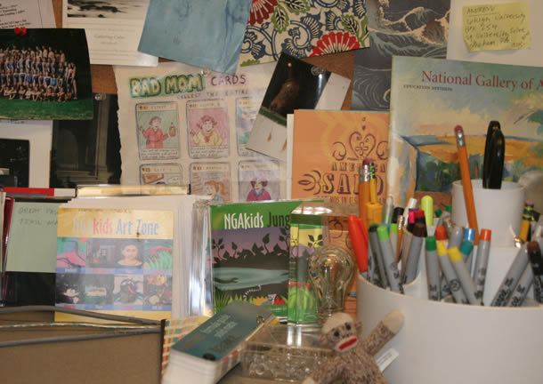

After graduating from Rhode Island School
of Design with a bfa in Graphic Design, I
worked at the Smithsonian Institution, first
as a book designer and then as art director for
publications at the Freer and Sackler Galleries.
In 2001, I opened my own design practice,
Carol Beehler Graphic Design. Throughout
my career, my primary responsibility has been
the design of books, catalogues, brochures,
and other exhibition-related printed materials.
I have continued to work with the same
category of clients, publishers, and museums
in my own practice.
I think good design is the result of creative
collaboration between designer and client
and ultimately should reflect the material
being presented rather than overpowering it.
Typography is a key element in design and I
strive for it to be legible, clean, and elegant.
My work has been recognized for design
excellence more than 100 times and has
been represented in the following design
competitions: aiga 50, American Association
of Museums, American Association of
University Presses, Art Directors Club of
Metropolitan Washington, The Art Directors
Club of New York, and Print Design Annual.
Carol Beehler
6421 Broad Street
Bethesda, Maryland 20816
301.229.1973
cbeehler@comcast.net